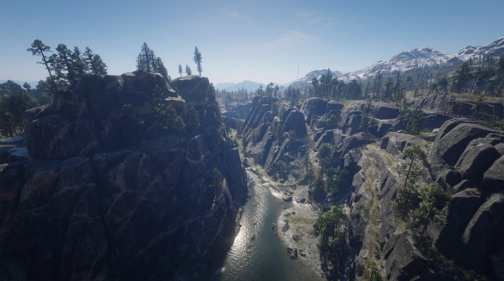

Hydrologie in Red Dead Redemption 2
Wie realistisch ist die Darstellung von Wasser im Spiel?
Red Dead Redemption 2 (RDR2) beeindruckt durch seine realistische Darstellung von Landschaft und Natur – auch das Verhalten von Wasser ist Teil dieser komplexen Spielwelt. Unter hydrologischen Gesichtspunkten fällt auf, dass das Spiel viele echte Prozesse und Phänomene erstaunlich realistisch abbildet.

Regen und Oberflächenwasser
Wenn es im Spiel regnet, wird der Boden sichtbar nass, es bilden sich Pfützen und verschiedene Oberflächen reagieren unterschiedlich schnell auf den Niederschlag. Kleidung dunkelt durch die Feuchtigkeit nach, und der Regen perlt realistisch ab. Solche Details spiegeln echte Eigenschaften von Wasseraufnahme und -verhalten wider.
Flüsse und Gelände
Die Flüsse in RDR2 verlaufen topografisch sinnvoll – sie folgen Tälern und neigen sich bergab. Auch das Verhalten des Wassers selbst ist realistisch: es fließt, bildet Strömungen, und beeinflusst die Bewegung von Objekten, z. B. wenn ein Körper von der Strömung mitgerissen wird.
Interaktion mit Figuren und Tieren
Spieler, Tiere und Objekte interagieren physikalisch mit dem Wasser. Pferde spritzen Wasser beim Durchreiten, Kleidung wird nass und trocknet mit der Zeit. Dieses Maß an Detailreichtum ist außergewöhnlich und trägt zur Immersion bei.
Verdunstung und Rückzug des Wassers
Nach Regen verschwindet das Wasser auf Oberflächen allmählich – dies wirkt natürlich, auch wenn Feinheiten wie Bodenversickerung oder Verdunstungsränder fehlen. Diese Details sind hydrologisch relevant, fehlen jedoch aus technischen Gründen.
Überschwemmungen und extreme Wetterereignisse
Echte Überschwemmungen, wie sie bei starkem Dauerregen auftreten können, simuliert das Spiel nicht. Wasserstände steigen nicht erkennbar, und es gibt keine Fluten, die Bauwerke oder Gelände beeinflussen. Aus hydrologischer Sicht fehlt hier ein entscheidender Teil – vermutlich aus Performance- und Gameplaygründen.
Fazit
Insgesamt gelingt es Red Dead Redemption 2, viele hydrologische Prozesse visuell und physikalisch sehr realistisch darzustellen. Besonders Regenverhalten, Strömungen, Interaktion mit Gelände und Figuren sowie das natürliche Aussehen von Flüssen sind herausragend umgesetzt. Einschränkungen gibt es bei dynamischen Wasserveränderungen wie Überschwemmungen, Bodenversickerung oder Grundwasserbewegung. Trotzdem bietet das Spiel einen beeindruckenden Einblick in den Wasserkreislauf und macht Hydrologie auf spielerische Weise erfahrbar.